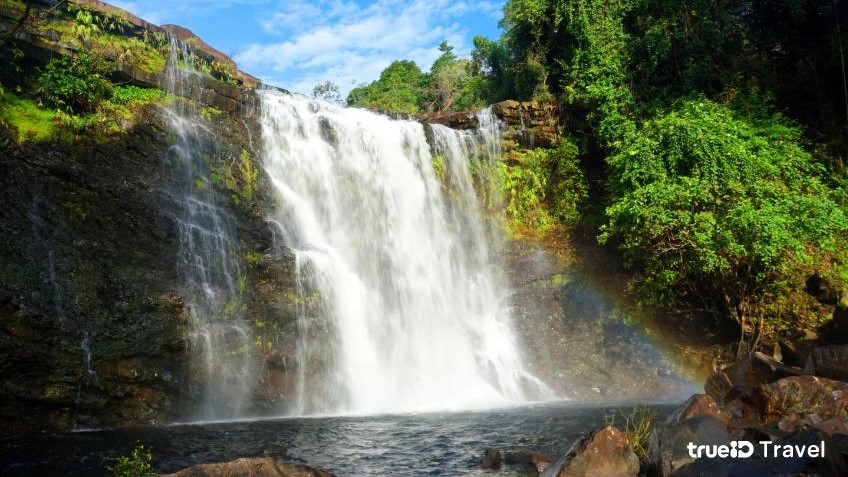
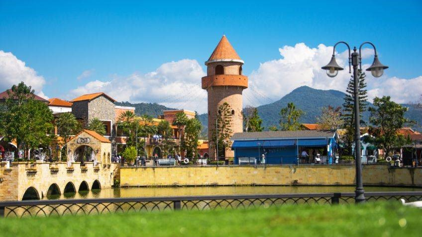

🏄♀️แนะนำ 10 สถานที่ท่องเที่ยวของจังหวัดปราจีนบุรี🏄♀️
1️⃣ อุทยานแห่งชาติทับลาน⛰️
⛰️อุทยานแห่งชาติทับลาน อุทยานแห่งชาติที่มีขนาดใหญ่เป็นอันดับ 2 ของประเทศ เป็นที่ตั้งของ “ผาเก็บตะวัน” เป็นจุดชมวิวที่นักท่องเที่ยวนิยมไปชมอาทิตย์ขึ้นในยามเช้าและอาทิตย์ตกดินในยามเย็น มีกิจกรรมสนุก ๆ อย่าง การยิงหนังสติ๊กปลูกป่า มีทั้งเมล็ดมะค่าโมง และเมล็ดลาน มีสภาพป่าที่ดุอมสมบูรณ์และหลากหลาย รวมถึงเป็นแหล่งของป่าลานขนาดใหญ่แห่งสุดท้ายของประเทศไทยอีกด้วย

Cr. การท่องเที่ยวแห่งประเทศไทย

Cr. TureID Travel

Cr. TrueID Travel
นอกจากนี้ อุทยานแห่งชาติทับลานยังเป็นแหล่งของน้ำตกสวย ๆ หลายแห่ง รวมถึงอ่างเก็บน้ำทับลาน มีบ้านพักและลานกางเต็นท์สำหรับนักท่องเที่ยวที่สนใจมาพักผ่อนภายในอุทยานฯ โดยสามารถติดต่อกับทางอุทยานฯ เพื่อสำรองที่พักล่วงหน้าได้
2️⃣ แก่งหินเพิง🚣♀️
🚣♀️แก่งหินเพิง สถานที่ล่องแก่งยอดนิยมอันดับต้น ๆ ของประเทศ ที่กำเนิดจากต้นน้ำลำธารที่ไหลเรื่อยมาจนถึงบริเวณแก่งหิน เป็นระยะทางกว่า 80 กิโลเมตร กับ 7 แก่ง สุดมันส์ ความยากระดับ 3-5 ช่วงกลางเดือนพฤษภาคมไปจนถึงต้นเดือนมิถุนายนนักท่องเที่ยวจึงสามารถใช้เป็นกิจกรรมล่องแก่งได้เป็นระยะทางสั้น ๆ 3-4 กิโลเมตร ตรงบริเวณส่วนปลายของลำน้ำ

Cr. TrueID Travel

Cr. TrueID Travel
3️⃣ น้ำตกเหวอีอ่ำ⛲
⛲น้ำตกเหวอีอ่ำ อยู่ภายใต้ความดูแลของเจ้าหน้าที่อุทยานแห่งชาติ หน่วยขญ.11 คลองเพกา จังหวัดปราจีนบุรี มีต้นน้ำมาจากคลองช้างคลาน ผ่านแอ่งน้ำ และไหลลงมาจากผาสูงประมาณ 25 เมตร เป็นม่านน้ำขนาดใหญ่ ในช่วงที่ไม่ใช่ฤดูน้ำหลาก น้ำจะใสสะอาด เหมาะแก่การลงไปเล่นน้ำให้ชื่นใจ แต่ในฤดูน้ำหลาก ปริมาณน้ำจะมากจนเทกระหน่ำลงมาจากผา เป็นภาพที่สวยงามตระการตาเป็นอย่างมาก

Cr. TrueID Travel

Cr. TrueID Travel
4️⃣ น้ำตกตาดหินยาว⛺
⛺ตาดหินยาว หรือ น้ำตกแก่งยาว ตั้งอยู่ทางด้านทิศใต้ของ อุทยานแห่งชาติเขาใหญ่ ซึ่งอยู่ในเขตของจังหวัดปราจีนบุรี แม้จะเป็นน้ำตกที่สูง แต่ก็มีส่วนของชั้นน้ำตกที่เราสามารถเดินเท้าเข้าไปชมความสวยงามของตาดหินยาวได้โดยต้องมีไกด์นำเที่ยวที่ชำนาญทางพาเข้าไปค่ะ ถ้าไปในช่วงน้ำมากอาจจะเดินทางลำบากกว่าช่วงน้ำน้อย แต่รับรองว่าจะได้เห็นทิวทัศน์ที่สวยงามของน้ำตกได้อย่างเต็มที่แน่นอน

Cr. TrueID Travel

Cr. TrueID Travel
5️⃣ อ่างเก็บน้ำจักรพงษ์🛶
🛶ตาดหินยาว หรือ น้ำตกแก่งยาว ตั้งอยู่ทางด้านทิศใต้ของ อุทยานแห่งชาติเขาใหญ่ ซึ่งอยู่ในเขตของจังหวัดปราจีนบุรี แม้จะเป็นน้ำตกที่สูง แต่ก็มีส่วนของชั้นน้ำตกที่เราสามารถเดินเท้าเข้าไปชมความสวยงามของตาดหินยาวได้โดยต้องมีไกด์นำเที่ยวที่ชำนาญทางพาเข้าไปค่ะ ถ้าไปในช่วงน้ำมากอาจจะเดินทางลำบากกว่าช่วงน้ำน้อย แต่รับรองว่าจะได้เห็นทิวทัศน์ที่สวยงามของน้ำตกได้อย่างเต็มที่แน่นอน

Cr. TrueID Travel

Cr. TrueID Travel
6️⃣ เขื่อนนฤบดินทรจินดา🏞️
🏞️เขื่อนนฤบดินทรจินดา สร้างขึ้นเพื่อบรรเทาอุทกภัยและภัยแล้ง รวมถึงช่วยในเรื่องการรักษาระบบนิเวศ เช่น การผลักดันน้ำเค็ม และน้ำเน่าเสียในแม่น้ำปราจีนบุรี และแม่น้ำบางปะกงในช่วงฤดูแล้งของทุกปี นอกจากนี้ยังพัฒนาให้เป็นสถานที่ท่องเที่ยวให้ทุกคนไปชื่นชมความสวยงามของสายน้ำและภูเขาอีกด้วย

Cr. TrueID Travel

Cr. TrueID Travel
7️⃣ ดินแดนหิ่งห้อยนับแสน🐝
🐝ดินแดนหิ่งห้อยนับแสน ดินแดนที่มีแสงระยิบระยับของหิ่งห้อยราวกับโลกแห่งเทพนิยาย ตั้งอยู่ที่ กรมทหารปืนใหญ่ที่ 2 รักษาพระองค์ ค่ายพรหมโยธี จังหวัดปราจีนบุรี สภาพแวดล้อมโดยรอบเต็มไปด้วยต้นไม้น้อยใหญ่ที่มีความอุดมสมบูรณ์และเงียบสงบ เมื่อถึงยามหน้าฝนก็จะเป็นช่วงเวลาที่เหล่าหิ่งห้อยนับแสนจะมาอยู่อาศัย ช่วยกันส่องแสงให้ยามค่ำคืนไม่มืดมนอีกต่อไป แต่ก่อนเข้าชมต้องปฏิบัติตามกฏระเบียบอย่างเคร่งครัด ไม่อย่างนั้นจะส่งผลกระทบให้หิ่งห้อยลดจำนวนลงได้

Cr. TrueID Travel

Cr. TrueID Travel
8️⃣ Verona at Tublan🏰
🏰เวโรน่า แอท ทับลาน (Verona at Tublan) สถานที่พักผ่อนและท่องเที่ยวสุดชิคที่เหมือนยกเอา เมืองเวโรน่า (Verona) ประเทศอิตาลี มาไว้บนพื้นที่กว่า 300 ไร่ ท่ามกลางขุนเขาที่มีอากาศบริสุทธิ์เป็นอันดับ 7 ของโลก ซึ่งเป็นต้นกำเนิด โรมิโอ แอนด์ จูเลียต (Romeo and Juliet) โศกนาฏกรรมที่นำมาเขียนเป็นบทละครชื่อดังของ วิลเลียม เชกสเปียร์ (William Shakespear) ได้แบบง่าย ๆ เดินเล่นถ่ายรูปกับสถาปัตยกรรมสวย ๆ ที่จำลองอย่างพิถีพิถัน สนุกสนานไปกับกิจกรรมอีกมากมาย ไม่ว่าจะเป็น ล่องเรือกอนโดล่า นั่งรถม้าสไตล์อิตาลี รวมถึงได้ใกล้ชิดและให้อาหารสัตว์นานาชนิด มีโซนของ เวโรน่าบูทีคโฮเท็ล (Verona Boutique Hotel) ให้ไปพักผ่อน ดื่มด่ำกับบรรยากาศสุดชิลและการบริการแบบครบวงจร ภายใต้คอนเซ็ปต์ “อาณาจักรแห่งการพักผ่อนของทุกคนในครอบครัว”

Cr. TrueID Travel

Cr. TrueID Travel

Cr. TrueID Travel
9️⃣ วัดแจ้ง⛩️
⛩️วัดแจ้ง สร้างขึ้นเมื่อปี พ.ศ. 2391 โดดเด่นด้วยพระธาตุกลางน้ำที่มีต้นแบบมาจาก พระธาตุพนม จังหวัดนครพนม เป็นที่ประดิษฐานของพระบรมสารีริกธาตุ รวมถึงหลวงพ่อเพชร พระพุทธรูปปางมารวิชัย ศิลปะเชียงแสน ซึ่งประดิษฐานอยู่ในวิหารทรงล้านนา หากเข้าไปในอำเภอเมืองปราจีนบุรีก็อย่าลืมแวะไปสักการะ

Cr. TrueID Travel

Cr. TrueID Travel
🔟 พุทธอุทยานหลวงปู่สด วังพญานาค 4 ตระกูล🌲
🌲พุทธอุทยานหลวงปู่สด วังพญานาค 4 ตระกูล หรืออุทยานพญานาค เป็นอุทยานที่สร้างขึ้นโดย นายณรงค์ เพียรผักแว่น ช่างปั้นงานศิลปะฝีมือเอก ที่เกิดนิมิตเห็นหลวงปู่สด พระภิกษุซึ่งเป็นที่เคารพนับถือของพุทธศาสนิกชนชาวไทยลอยอยู่กลางบึงน้ำ จึงเกิดแรงศรัทธาและสร้างรูปปั้นหลวงปู่สดขึ้น และนำมาประดิษฐานอยู่กลางบึงน้ำ ท่ามกลาง พญานาคอีก 4 ตน บรรยากาศร่มรื่น รายล้อมไปด้วยขุนเขาและบึงน้ำ

Cr. TrueID Travel